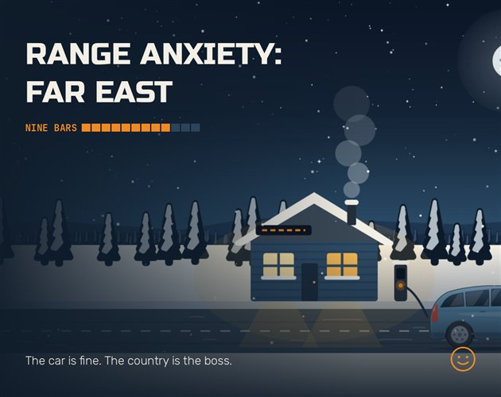
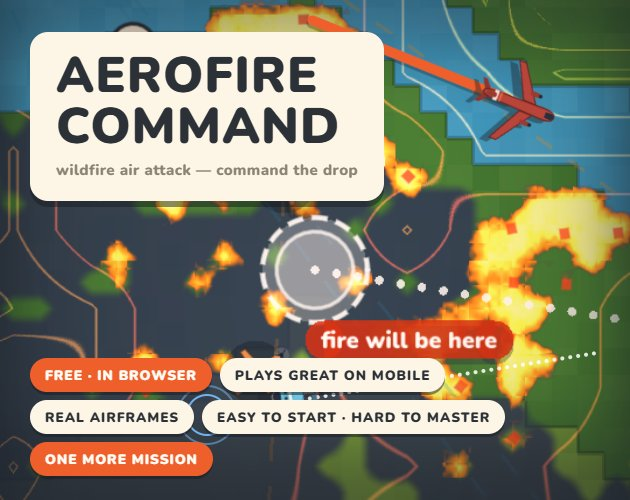
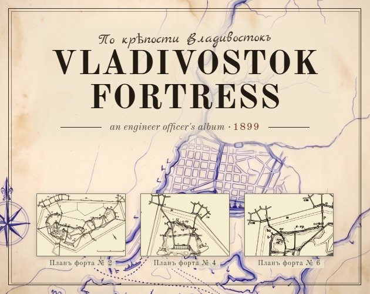

Range Anxiety: Far East
Перегон
A roguelike about buying used electric cars in Vladivostok and driving them somewhere colder. The car is fine. The country is the boss.
Play free on itch.ioIndependent game studio
We grew up by the Golden Horn in Vladivostok and make games by Sydney Harbour. Small, sharp games you can play in your browser, free.
See the games
Перегон
A roguelike about buying used electric cars in Vladivostok and driving them somewhere colder. The car is fine. The country is the boss.
Play free on itch.ioA boxing card game. Read his next move, spot the bluff, and knock him out. Quick fights, deep decisions.
Play free on itch.io
Fight wildfires with air tankers, helicopters and ground crews. Read the wind, cut the line, and aim where the fire is going, not where it is.
Play free on itch.io
A narrative strategy game about building the world's last and biggest fortress, told through an engineer officer's album from 1899.
Play free on itch.ioVladivostok sits on the Golden Horn, a bay named after Istanbul's. Sydney sits on Port Jackson. Both are harbour cities with a famous bridge across the water, and the studio is named for the pair of them.
Our games come from both places: the roads, forts and weather of the Russian Far East, and the bushfire country around Sydney. They run in a browser, on a phone or a desk, and you can play them all free on itch.io.